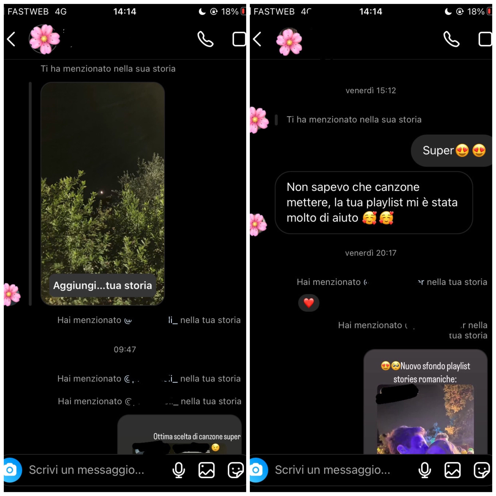
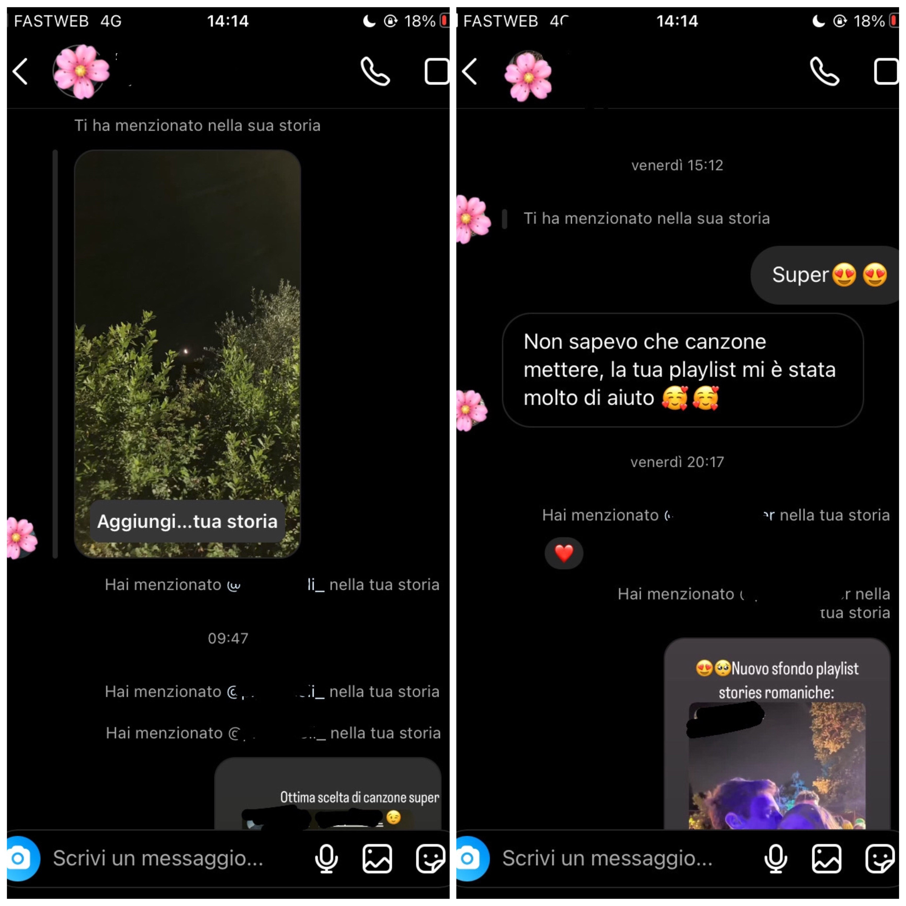
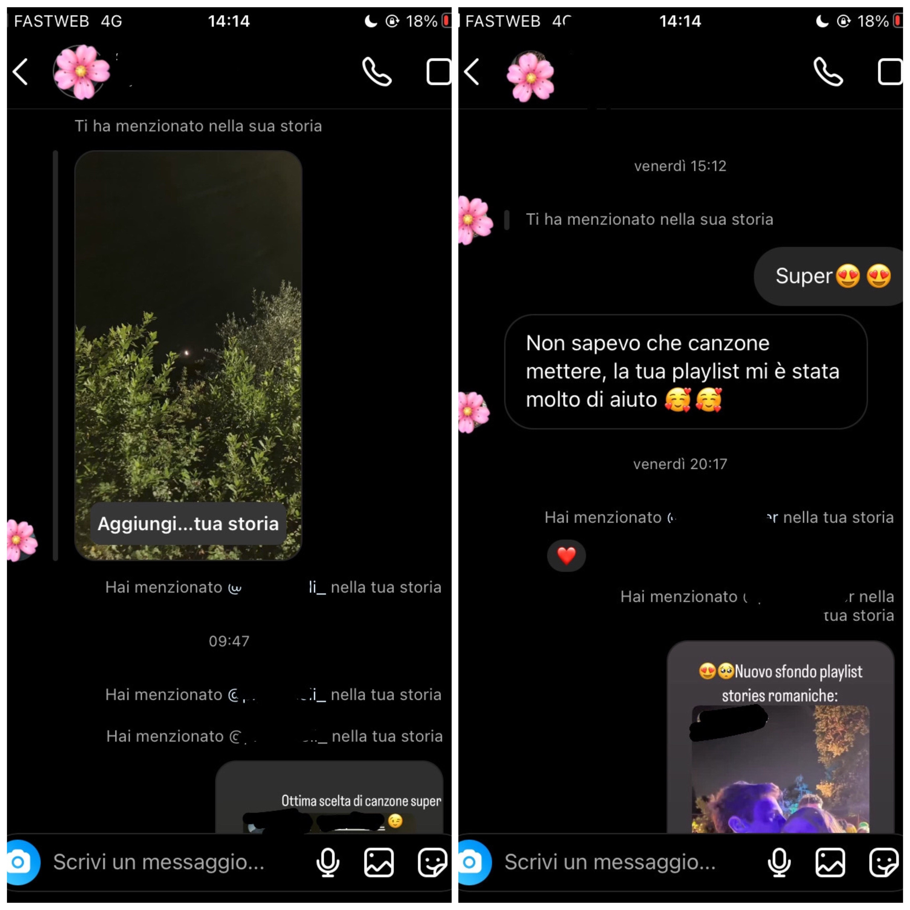

Like tattico ha raggiunto tutti gli obiettivi che ci eravamo prefissati
Risultati su Instagram:
 

Risultati su Google Analytics:
Like Tattico è la guida per l’utilizzo della musica nelle stories di Instagram.
Il nostro sito è il primo e l’unico a offrire un ampio catalogo di titoli adatti a questa funzione, associandoli a possibili spunti di utilizzo e, soprattutto, offre un servizio in più individuando e presentando solo le canzoni disponibili ad ora sul social preso in considerazione.
Come si può notare dal linguaggio ironico, vivace e dai numerosi riferimenti alla cultura digitale, il nostro prodotto è rivolto ai giovani e ai giovanissimi che fanno utilizzo di Instagram come principale forma di comunicazione ed espressione.
Il nostro obiettivo è aiutare le persone a valorizzare i loro contenuti mediatici tramite il giusto utilizzo della musica, e diminuire il tempo di elaborazione della storia, offrendo agli utenti una preselezione di canzoni sicuramente presenti sulla piattaforma e delle opzioni creative.
Il target di utenza di Like Tattico è rappresentato dai ragazzi e dalle ragazze appartenenti alla fascia di età tra 16-25 anni.
Like Tattico è il primo e unico sito web a proposito della scelta musicale nelle storie Instagram. Questo argomento è stato precedentemente trattato solo superficialmente in piccoli articoli di siti web riguardanti la tecnologia in generale (ad esempio Wordsmart e Moffe). Le loro guide trattano argomenti ormai scontati e ripetitivi per il target considerato da Like Tattico e sono quasi completamente prive di esempi musicali. In più non offrono una soluzione al disagio causato dai recenti avvenimenti che hanno decimato l’offerta musicale del social media.
home
Genere musicale
Messaggio stories
Contesto stories
About
Documentazione
Per Like Tattico abbiamo scelto di lavorare su un design semplice, intuitivo, ma chiaro, perchè, visto il target preso in considerazione, ovvero un pubblico che si muove su internet ad una velocità mai vista prima, volevamo rendere la navigazione sul nostro sito il più lineare e veloce possibile, così da assicurarci che i nostri utenti non si stancassero di guardarlo prima ancora di aver visitato tutte le pagine.
I colori che abbiamo scelto per il nostro sito sono il viola (#AD118C), il rosa (rgba(228, 15, 175, 0.849)) e due sfumature di giallo ( #F5EEA4 e #FBDA30), ovvero la stessa triade di colori del logo di Instagram, perchè il nostro intento era quello di creare un’isotopia, come dice la semiotica, che inconsapevolmente, durante tutto il soggiorno sul nostro sito, faccia tenere a mente agli utenti che quello che stanno leggendo deve poi essere applicato proprio in quell’applicazione.
Il logo richiama alla pragmaticità già accennata in precedenza, abbiamo ripreso la grafica della notifica dell’arrivo di un Like su Instagram e gli abbiamo disegnato delle cuffie, per ricollegarsi al tema della musica.
Abbiamo poi deciso di aggiungere delle immagini a scopo estetico, che richiamassero alle varie categorie di musica e tipologia di stories trattate nelle pagine del sito, e che rimarcassero la nostra scelta cromatica, per dare coerenza.
I Font che abbiamo scelto, ovvero Wix Madefor Display, Wix Madefor Text, Open Sans e Petrona, richiamano quelle che sono le caratteristiche che abbiamo voluto dare al nostro sito, ovvero semplicità e chiarezza, data anche dalla scelta di mettere le scritte grandi, per facilitarne la lettura.
I linguaggi che abbiamo utilizzato per la creazione di Like Tattico sono HTML5 e CSS3.
Gli strumenti utilizzati sono:
Visual Studio Code, text editor
Github, pubblicazione sito
Google Analytics, analisi dei risultati
Google Font, per trovare nuovi font
Balsamiq, creazione wireframes
Pexels, per trovare foto liberamente scaricabili da internet
Toolset.it, per le emoji
PicsArt, per creazione immagini
Procreate, per creazione logo
Instagram, per sponsorizzazione sito
Apple music, per le playlist.
Prima di Like Tattico non era mai stato elaborato un sito web completamente incentrato e specifico sulla musica nelle stories di Instagram.
Il tema che noi abbiamo approfondito è sempre stato considerato marginale dai nostri concorrenti e perciò lo spazio che occupava nei loro siti era poco e trattato approssimativamente.
Gli unici due articoli dove abbiamo riscontrato un maggior interessamento all’argomento sono di:
Wordsmar, le quali guide però sono più centrate sul funzionamento dell’adesivo Musica, e sulla teoria di come scegliere una canzone, nozioni banali per gli utenti del target di Like Tattico.
Nonostante parlino di musica, non viene menzionato praticamente nessun consiglio musicale e soprattutto, probabilmente perchè è stato scritto molto tempo fa, non c’è alcun accenno a quello che è accaduto tra marzo 2023 a ora.
Moffe.it, il tema principale di questo articolo invece è proprio la scomparsa delle canzoni da Instagram, anche se comunque non ne dà una spiegazione completa.
Il suo linguaggio risulta essere noioso e poco coinvolgente, e anche qui abbiamo poche proposte musicali ( solo 4 e tra l’altro titoli molto commerciali e conosciuti).
Anche Moffe.it non è il sito adatto al target di Like Tattico.
Gli obiettivi comunicativi di Like Tattico consistono nell’offerta di un servizio che prima non esisteva, ovvero una sorta di consulenza per facilitare l’utilizzo e per sfruttare al massimo le potenzialità comunicative della musica su Instagram.
In più, al momento ha anche l’importante obiettivo di sopperire alle lacune presenti nel catalogo musicale di Instagram cercando di salvaguardare il tempo della scelta del brano, offrendo una vasta lista di titoli che sicuramente si trovano nell’applicazione.
Per misurare il conseguimento dei nostri obiettivi ci siamo posti come risultati da ottenere: 50 visite al sito da utente singolo, 100 seguaci sulla pagina instagram e 5 stories Instagram di utenti che hanno utilizzato le nostre playlist per la scelta del brano e hanno taggato la nostra pagina Instagram.
Il gruppo demografico a cui si rivolge Like Tattico è composto dai ragazzi con età compresa tra i 16 e i 25 anni, sia perchè compongono circa il 32% del pubblico totale di Instagram, sia perchè pensiamo che il nostro prodotto possa essere principalmente di loro interesse. Per questo abbiamo deciso di utilizzare un linguaggio informale, simpatico e giovanile. Il tono colloquiale, come se Like Tattico fosse un coetaneo con il quale i giovani utenti stanno intrattenendo una conversazione. Ci rendiamo conto che tramite i frequenti riferimenti alla cultura digitale presenti nei testi del sito stiamo indirizzando il nostro prodotto ad una nicchia di clienti ben precisa, che però a nostro parere è l’unica che potrebbe apprezzare a pieno il nostro prodotto e che potrebbe usufruire dei nostri servizi. I ragazzi di questa fascia di età infatti sono gli unici che utilizzano Instagram come vero e proprio mezzo di comunicazione, e non solo come forma di intrattenimento, perciò quello che a Like Tattico preme è di insegnar loro come esprimersi al meglio.
La promozione di Like Tattico, in quanto sito basato sull’applicazione di Instagram, è stata fatta principalmente su questa piattaforma, tramite la condivisione di post, di stories con i link alle playlist, e di stories di utenti che hanno utilizzato i nostri consigli musicali.
Like tattico ha raggiunto tutti gli obiettivi che ci eravamo prefissati
Risultati su Instagram:

Risultati su Google Analytics: